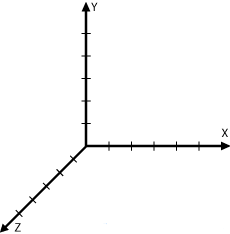
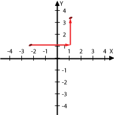
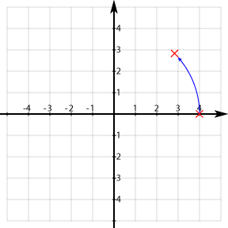
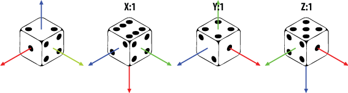
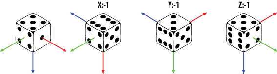

Android 3D坐标（一）
Coordinate System坐标系
OpenGL使用了右手坐标系统，右手坐标系判断方法：在空间直角坐标系中，让右手拇指指向x轴的正方向，食指指向y轴的正方向，如果中指能指向z轴的正方向，则称这个坐标系为右手直角坐标系。
效果图：

Translate平移变换
方法public abstract void glTranslatef (float x, float y, float z) 用于坐标平移变换。就是使用的坐标的平移变换，可以进行多次平移变换，其结果为多个平移矩阵的累计结果，矩阵的顺序不重要，可以互换。

Rotate旋转
方法public abstract void glRotatef(float angle, float x, float y, float z)用来实现选择坐标变换，单位为角度。
(x,y,z)定义旋转的参照矢量方向。多次旋转的顺序非常重要。

比如你选择一个骰子，首先按下列顺序选择3次：
gl.glRotatef(90f, 1.0f, 0.0f, 0.0f);gl.glRotatef(90f, 0.0f, 1.0f, 0.0f);
gl.glRotatef(90f, 0.0f, 0.0f, 1.0f);
效果图：

然后打算逆向旋转回原先的初始状态，需要有如下旋转：
gl.glRotatef(90f, 0.0f, 0.0f, -1.0f);gl.glRotatef(90f, 0.0f, -1.0f, 0.0f);
gl.glRotatef(90f, -1.0f, 0.0f, 0.0f);

或者如下旋转：
gl.glRotatef(90f, 0.0f, 0.0f, -1.0f);
gl.glRotatef(90f, 0.0f, -1.0f, 0.0f);
gl.glRotatef(90f, -1.0f, 0.0f, 0.0f);